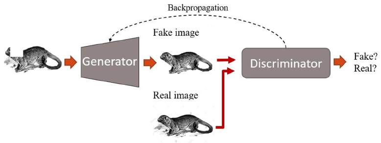
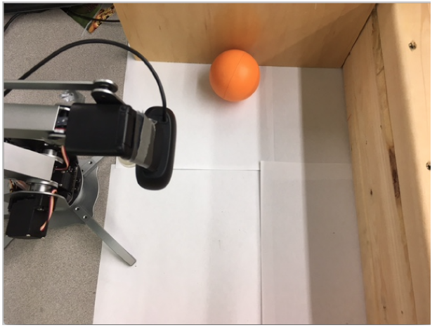

Projects on Robotics and Computer Vision, Image Processing
GAN for Sketches Auto-complete
 Our project’s aim is to classify products using their images. We are comparing results from three classification techniques Traditional Computer Vision Techniques - Bag of Words SIFT + SVM Convolutional Neural Networks (CNN) Transfer Learning (Pre-trained model)
Recursive Bayesian Filtering Practice for Robot Visual Search
 When the lost target’s location is not predictable or narrowly localized the sensor needs to acquire new data to locate it. This new data can be obtained by executing a time-optimized search, based on past data that the sensor has collected. Recursive Bayesian Filtering (RBF) algorithms have been used to generate the optimal search paths for various applications such as unmanned aerial vehicles searching for a lost target at sea and camera mounted mobile robots searching for a target [3, 4]. In this course project, I apply RBF to the task of automatic visual search in man-made environment. A gaussian motion model is used here, while also sensor-based observation model is adopted. I use a novel particle filter with a priori target tracking information considered. The simulation and experiment have shown this method has good robustness when the target is lost in FOV. Further improvement and application are also discussed.
3D Reconstruction based on Drone and Kinect
 Multi-rotor copter is a hot research and application field these years due to its excellent hover performance,
easy to control, and small size for packing. In situations like autonomous surveillance, unmanned exploration,
the aerial vehicles have such great application potential, some revolutionary cross innovation which are based
on aerial vehicles have been already appearing in this world. With its small shape and excellent motion ability,
the multi-rotor aerial vehicle is fit for those environment which is narrower or more complex when compared to others.
However, in this time, since SLAM technology is now under research and optimization, including those hardware, the indoor
navigation for aerial robots has just been realized in those advanced Labs or companies, the technology is at its start-up.
Meanwhile, we should also notice that so many excellent algorithms are joining the open-source tendency, like the ORB-SLAM,
RGBD-SLAM, and those flight control unit is more and more reliable, depth camera like Kinect becomes cheaper, so it is both
affordable and meaningful to build such system by ourselves. On the one hand, it’s important to help those technologies about autonomous
indoor navigation for aerial robots, on the other hand, it will realize the unmanned exploration for special environment with aerial vehicles.
I explore the whole process to build such a SLAM system, also figure out the composition of software and hardware. This project implements SLAM
algorithms from those cutting-edge Labs, while also achieves integration of different technologies in one system. This project achieves the first stage of
real-time 3D reconstruction of indoor environment, which matters much for the transition of aerial vehicles to unmanned flying robots.
Multi-rotor copter is a hot research and application field these years due to its excellent hover performance,
easy to control, and small size for packing. In situations like autonomous surveillance, unmanned exploration,
the aerial vehicles have such great application potential, some revolutionary cross innovation which are based
on aerial vehicles have been already appearing in this world. With its small shape and excellent motion ability,
the multi-rotor aerial vehicle is fit for those environment which is narrower or more complex when compared to others.
However, in this time, since SLAM technology is now under research and optimization, including those hardware, the indoor
navigation for aerial robots has just been realized in those advanced Labs or companies, the technology is at its start-up.
Meanwhile, we should also notice that so many excellent algorithms are joining the open-source tendency, like the ORB-SLAM,
RGBD-SLAM, and those flight control unit is more and more reliable, depth camera like Kinect becomes cheaper, so it is both
affordable and meaningful to build such system by ourselves. On the one hand, it’s important to help those technologies about autonomous
indoor navigation for aerial robots, on the other hand, it will realize the unmanned exploration for special environment with aerial vehicles.
I explore the whole process to build such a SLAM system, also figure out the composition of software and hardware. This project implements SLAM
algorithms from those cutting-edge Labs, while also achieves integration of different technologies in one system. This project achieves the first stage of
real-time 3D reconstruction of indoor environment, which matters much for the transition of aerial vehicles to unmanned flying robots.